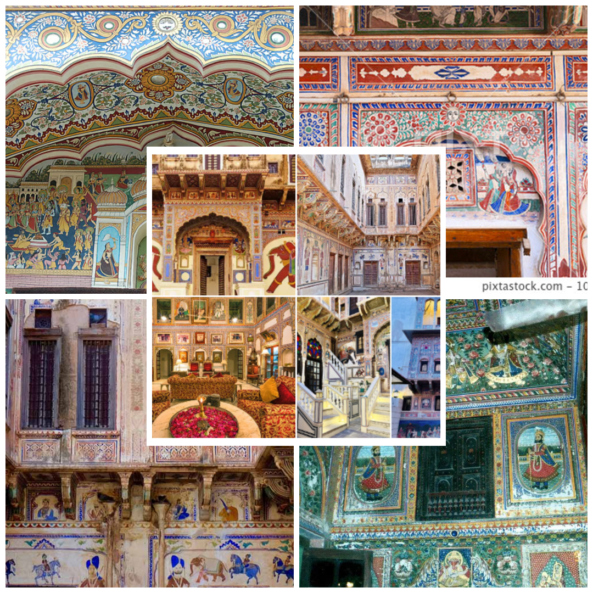
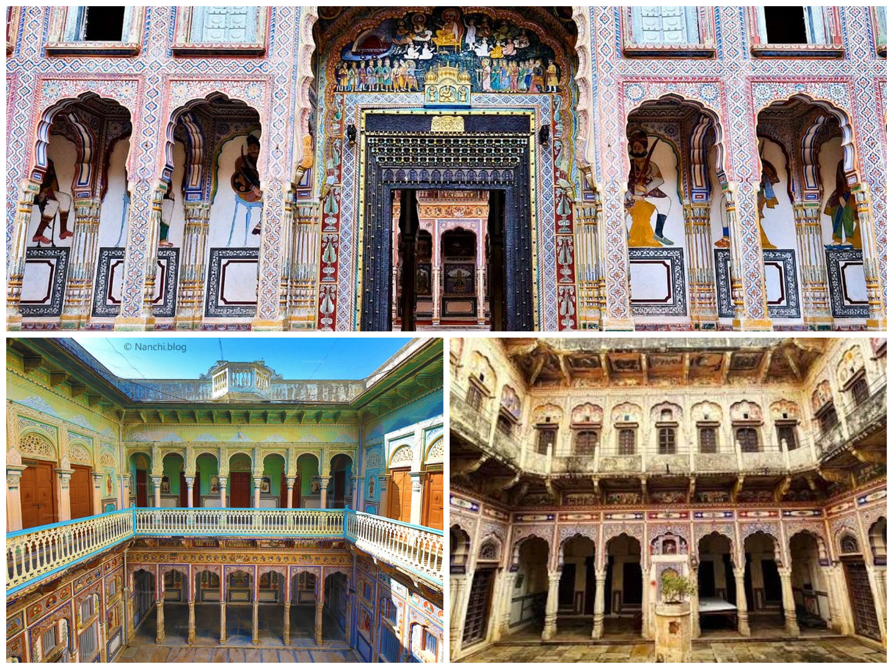
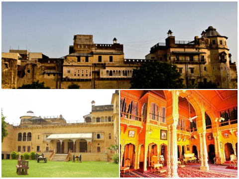
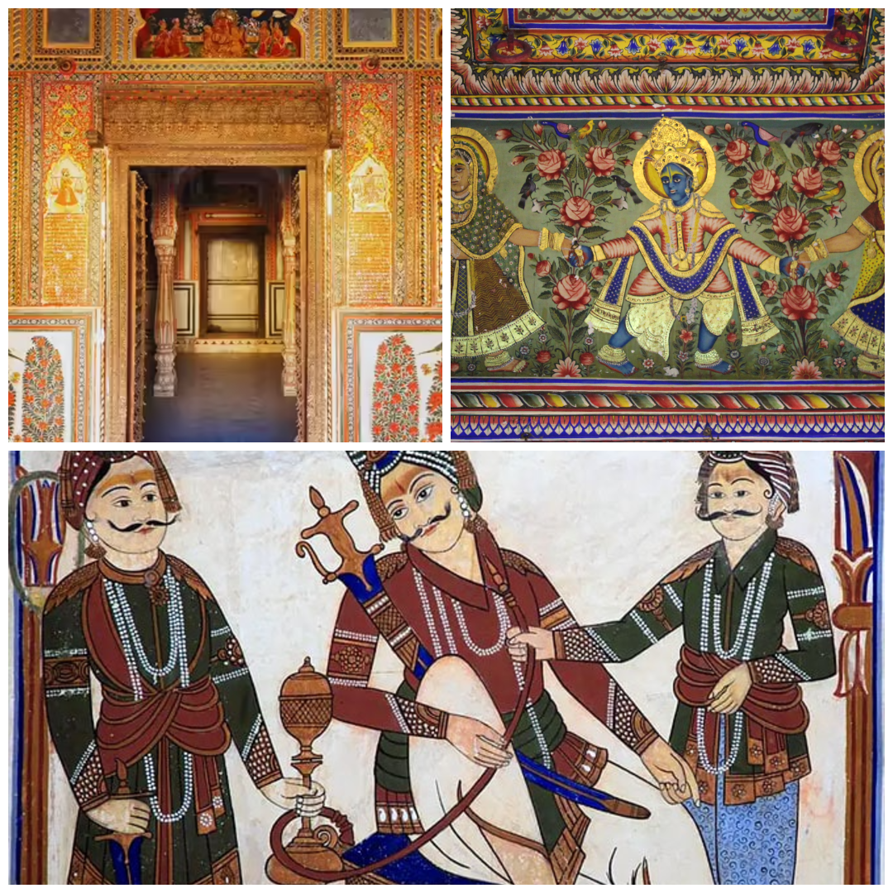
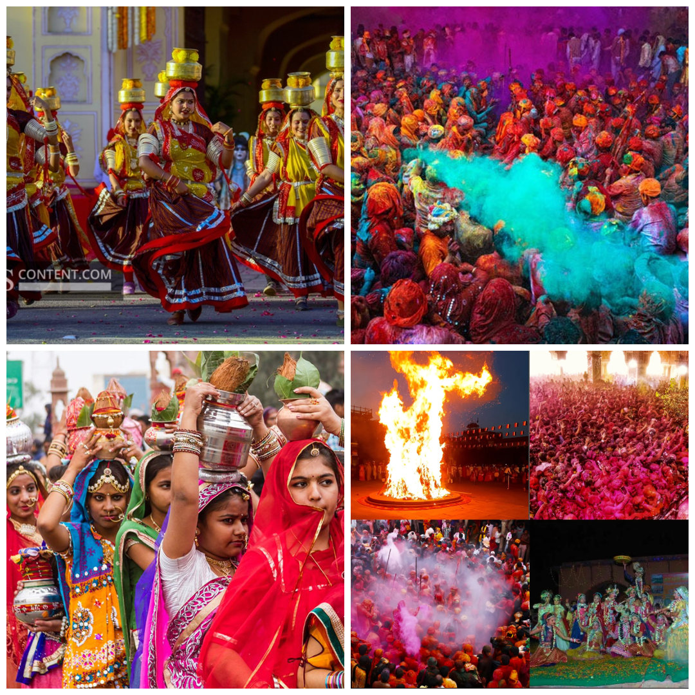
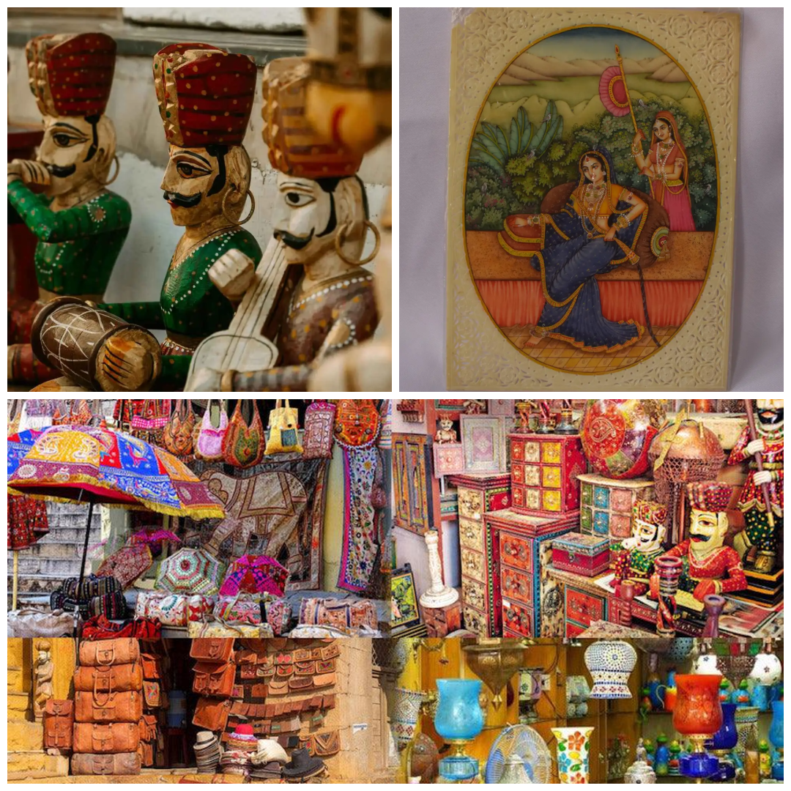
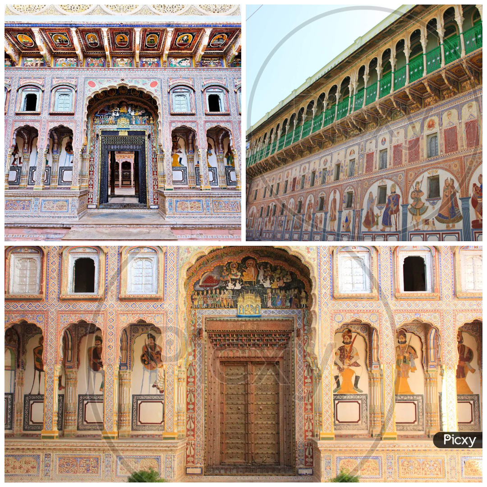
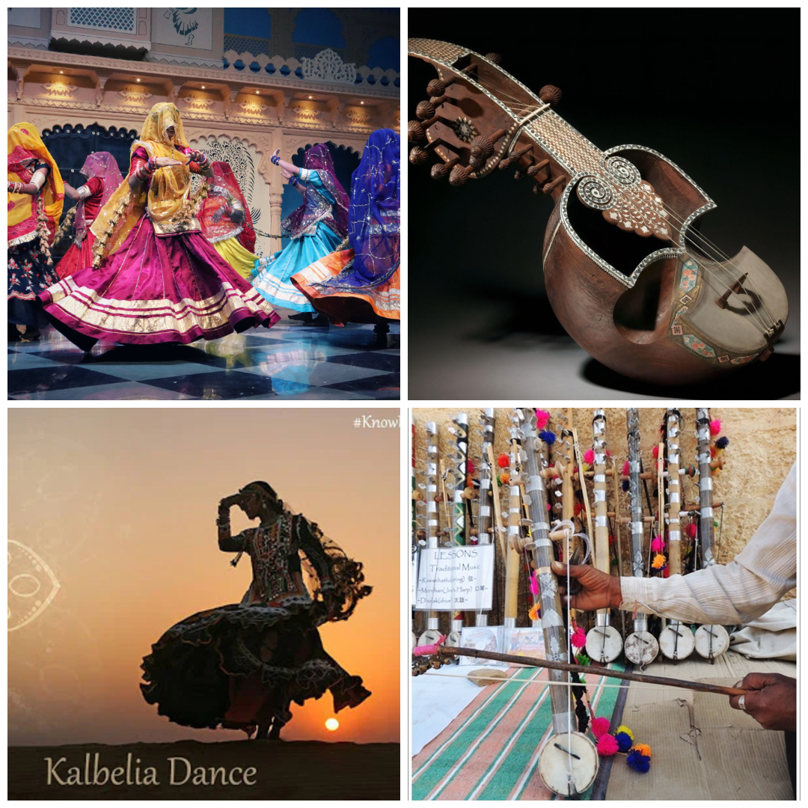
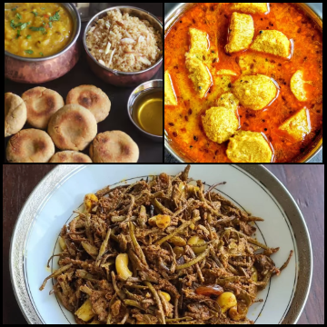

Shekhawati, located in the northern region of Rajasthan, is famous for its rich artistic heritage, magnificent havelis, vibrant festivals, and colorful traditions. Often referred to as the "Open Art Gallery of Rajasthan," the region is known for its beautiful fresco paintings that decorate the walls of grand mansions. The culture of Shekhawati reflects centuries of Rajput history, merchant prosperity, and traditional rural lifestyle that continues to attract tourists from around the world.

Location: Mandawa, Jhunjhunu district, Rajasthan.
Importance: Mandawa is famous for its beautifully painted havelis that showcase intricate fresco art depicting mythology, royal life, and historic stories.
Special Feature: Famous havelis include Jhunjhunwala Haveli and Goenka Haveli, known for their detailed paintings and architectural beauty.

Location: Nawalgarh, Jhunjhunu district, Rajasthan.
Importance: Nawalgarh is often called the "Golden City of Shekhawati" because of its grand mansions decorated with colorful fresco paintings.
Special Feature: The Poddar Haveli Museum preserves traditional art and gives visitors a glimpse into the history and lifestyle of the region.

Location: Dundlod, Jhunjhunu district, Rajasthan.
Importance: A historic Rajput fort that represents the royal heritage of the Shekhawati region.
Special Feature: The fort has been converted into a heritage hotel and offers Marwari horse safaris for visitors.

Location: Mandawa, Nawalgarh, Fatehpur and nearby towns.
Importance: Shekhawati is known as the "Open Art Gallery of Rajasthan" because thousands of fresco paintings decorate its buildings.
Special Feature: These paintings show scenes from mythology, royal life, British influence, and everyday village life.

Location: Throughout Shekhawati region.
Importance: Festivals like Teej, Gangaur, and Holi are celebrated with great enthusiasm.
Special Feature: Folk dances, music performances, colorful fairs, and traditional rituals highlight the vibrant culture of Rajasthan.

Location: Artisan villages across Shekhawati.
Importance: The region is famous for pottery, wood carving, miniature paintings, and textile crafts.
Special Feature: Skilled artisans continue to practice traditional craftsmanship passed down through generations.

Location: Nawalgarh, Jhunjhunu district, Rajasthan.
Importance: Museum preserves the history and art of Shekhawati.
Special Feature: Showcases frescoes, paintings, and artifacts from historic havelis.

Location: Across Shekhawati and Rajasthan.
Importance: Folk traditions such as Ghoomar, Kalbeliya, and Bhavai play an important role in cultural celebrations.
Special Feature: Performances include traditional instruments, colorful costumes, and storytelling through dance.

Location: Popular throughout Rajasthan.
Importance: Local cuisine reflects desert culture and uses ingredients that can survive harsh climatic conditions.
Special Feature: Famous dishes include Dal Baati Churma, Gatte ki Sabzi, Bajre ki Roti, and Ker Sangri.